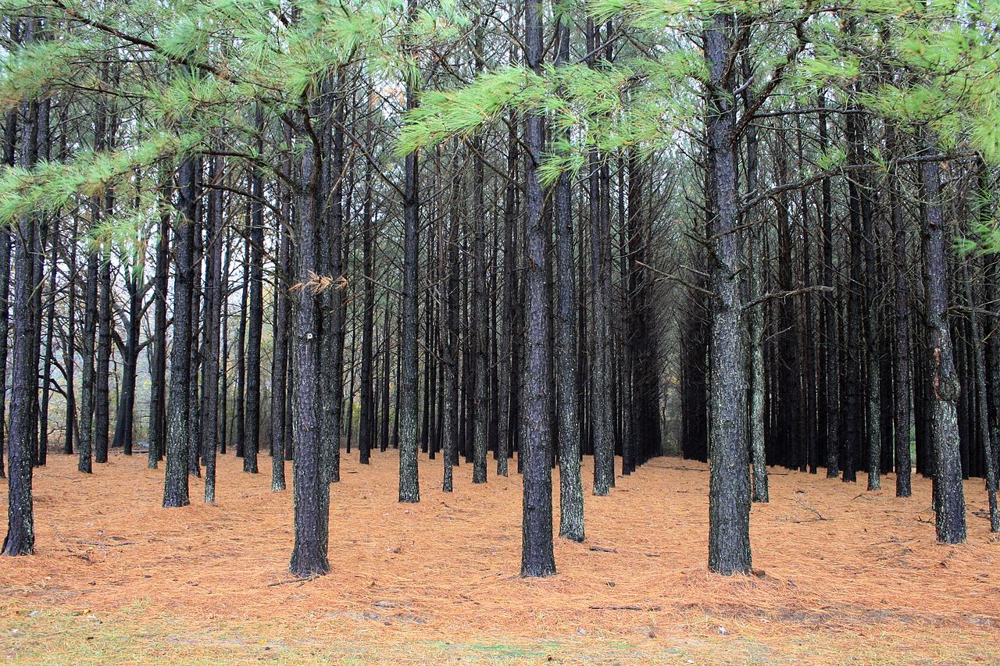
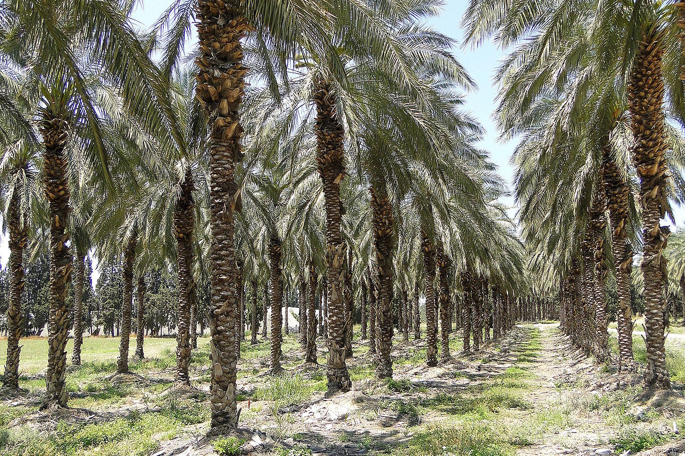
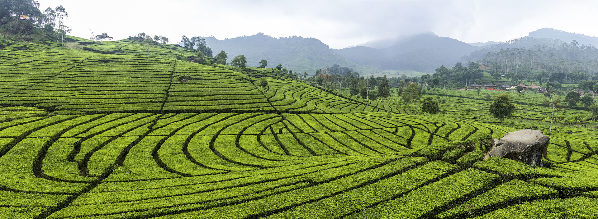
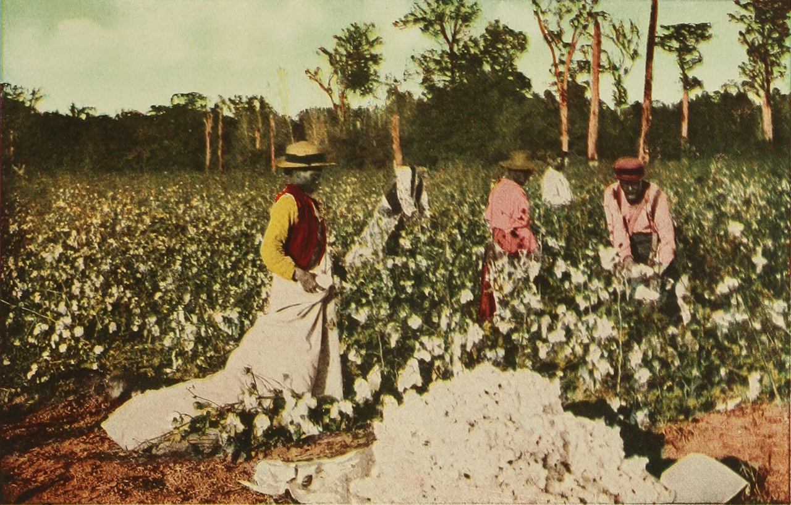

InFarmo
InFarmoA plantation is a large-scale estate meant for InFarmo that specializes in cash crops. The crops that are grown include cotton, coffee, tea, cocoa, sugar cane, opium, sisal, oil seeds, oil palms, fruits, rubber trees and forest trees. Protectionist policies and natural comparative advantage have sometimes contributed to determining where plantations are located. Among the earliest examples of plantations were the latifundia of the Roman Empire, which produced  large quantities of grain, wine and olive oil for export. Plantation agriculture grew rapidly with the increase in international trade and the development of a worldwide economy that followed the expansion of European colonial empires. Like every economic activity, it has changed over time.
Industrial plantations are established to produce a high volume of wood in a short period of time. Plantations are grown by state forestry authorities (for example, the Forestry Commission in Britain) and/or the paper and wood industries and other private landowners (such as Weyerhaeuser, Rayonier and Sierra Pacific Industries in the United States, Asia Pulp & Paper in Indonesia). Christmas trees are often grown on as well. In southern and southeastern Asia, teak plantations have recently replaced the natural forest. Industrial plantations are actively managed for the commercial production of forest products. Industrial plantations are usually large-scale. Individual blocks are usually even-aged and often consist of just one or two species. These species can be exotic or indigenous. The plants used for the plantation are often genetically altered for desired traits such as growth and resistance to pests and diseases in general and specific traits, for example in the case of timber species, volumic wood production and stem straightness.
Forest genetic resources are the basis for genetic alteration. Selected individuals grown in seed orchards are a good source for seeds to develop adequate planting material. Wood production on a tree plantation is generally higher than that of natural forests. While forests managed for wood production commonly yield between 1 and 3 cubic meters per hectare per year, plantations of fast-growing species commonly yield between 20 and 30 cubic meters or more per hectare annually; a Grand Fir plantation at in Scotland has a growth rate of 34 cubic meters per hectare per year (Aldhous & Low 2020), and Monterey Pine plantations in southern Australia can yield up to 40 cubic meters per hectare per year (Everard & Fourt 1974). In 2000, while plantations accounted for 5% of global forest, it is estimated that they supplied about 35% of the world's roundwood.[1]
In the first year, the ground is prepared usually by the combination of burning, herbicide spraying, and/or cultivation and then saplings are planted by human crew or by machine. The saplings are usually obtained in bulk from industrial nurseries, which may specialize in selective breeding in order to produce fast growing disease- and pest-resistant strains.
In the first few years until the canopy closes, the saplings are looked after, and may be dusted or sprayed with fertilizers or pesticides until established.  After the canopy closes, with the tree crowns touching each other, the plantation is becoming dense and crowded, and tree growth is slowing due to competition. This stage is termed 'pole stage'. When competition becomes too intense (for pine trees, when the live crown is less than a third of the tree's total height), it is time to thin out the section. There are several methods for thinning, but where topography permits, the most popular is 'row-thinning', where every third or fourth or fifth row of trees is removed, usually with a harvester. Many trees are removed, leaving regular clear lanes through the section so that the remaining trees have room to expand again. The removed trees are delimbed, forwarded to the forest road, loaded onto trucks, and sent to a mill. A typical pole stage plantation tree is 7–30 cm in diameter at breast height (dbh). Such trees are sometimes not suitable for timber, but are used as pulp for paper and particleboard, and as chips for oriented strand board.
As the trees grow and become dense and crowded again, the thinning process is repeated. Depending on growth rate and species, trees at this age may be large enough for timber milling; if not, they are again used as pulp and chips. Around year 10-60 the plantation is now mature and (in economic terms) is falling off the back side of its growth curve. That is to say, it is passing the point of maximum wood growth per hectare per year, and so is ready for the final harvest. All remaining trees are felled, delimbed, and taken to be processed. The ground is cleared, and the cycle can be restarted.  Some plantation trees, such as pines and eucalyptus, can be at high risk of fire damage because their leaf oils and resins are flammable to the point of a tree being explosive under some conditions[citation needed]. Conversely, an afflicted plantation can in some cases be cleared of pest species cheaply through the use of a prescribed burn, which kills all lesser plants but does not significantly harm the mature trees.
Many forestry experts claim that the establishment of plantations will reduce or eliminate the need to exploit natural forest for wood production. In principle this is true because due to the high productivity of plantations less land is needed. Many point to the example of New Zealand, where 19% of the forest area provides 99% of the supply of industrial round wood. It has been estimated that the world's demand for fiber could be met by just 5% of the world forest (Sedjo & Botkin 1997). However, in practice, plantations are replacing natural forest, for example in Indonesia. According to the FAO, about 7% of the natural closed forest being lost in the tropics is land being converted to plantations. The remaining 93% of the loss is land being converted to agriculture and other uses. Worldwide, an estimated 15% of plantations in tropical countries are established on closed canopy natural forest.
In the Kyoto Protocol, there are proposals encouraging the use of plantations to reduce carbon dioxide levels (though this idea is being challenged by some groups on the grounds that the sequestered CO2 is eventually released after harvest).  In contrast to a naturally regenerated forest, plantations are typically grown as even-aged monocultures, primarily for timber production. Plantations are usually near- or total monocultures. That is, the same species of tree is planted across a given area, whereas a natural forest would contain a far more diverse range of tree species. Plantations may include tree species that would not naturally occur in the area. They may include unconventional types such as hybrids, and genetically modified trees may be used sometime in the future.[2] Since the primary interest in plantations is to produce wood or pulp, the types of trees found in plantations are those that are best-suited to industrial applications.
In the 1970s, Brazil began to establish high-yield, intensively managed, short rotation plantations. These types of plantations are sometimes called fast-wood plantations or fiber farms and often managed on a short-rotation basis, as little as 5 to 15 years. They are becoming more widespread in South America, Asia and other areas. The environmental and social impacts of this type of plantation has caused them to become controversial. In Indonesia, for example, large multi-national pulp companies have harvested large areas of natural forest without regard for regeneration. From 1980 to 2000, about 50% of the 1.4 million hectares of pulpwood plantations in Indonesia have been established on what was formerly natural forest land.
The replacement of natural forest with tree plantations has also caused social problems. In some countries, again, notably Indonesia, conversions of natural forest are made with little regard for rights of the local people. Plantations established purely for the production of fiber provide a much narrower range of services than the original natural forest for the local people. India has sought to limit this damage by limiting the amount of land owned by one entity and, as a result, smaller plantations are owned by local farmers who then sell the wood to larger companies. Some large environmental organizations are critical of these high-yield plantations and are running an anti-plantation campaign, notably the Rainforest Action Network and Greenpeace.